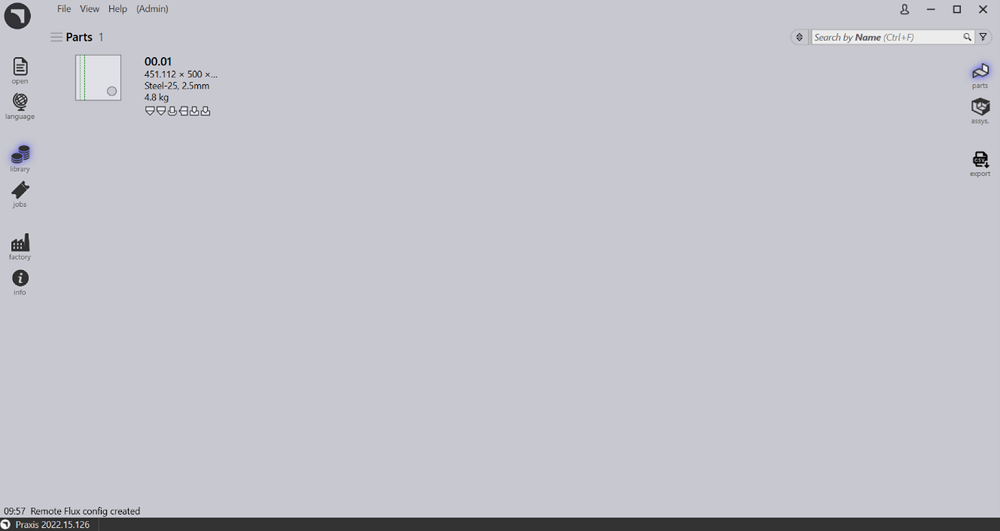

Serverinstallation
Følg instruktionerne for at installere TruSmartCAM Serverinstallation sammen med SQL.
|
Administratorrettigheder
For at udføre denne installation skal brugeren have administrative rettigheder. |
-
Udfør Setup.TruSmartCAM.<version>.exe for at påbegynde installationen.
| Version er et tal. |
-
Læs licensaftalen og vælg I accept the agreement og klik derefter Næste .

Trin 1 : Installationsplacering
-
Angiv installationsmappen eller accepter installationens standard
C:\Program Files\Metamation\Praxisog klik Næste.-
C:\Program Files\Metamation\Praxis- Installationsmappen vil indeholde følgende mapper: Bin, MetaCAM, Samples og Tracker. -
C:\Program Data\Metamation- Datamappen vil indeholde følgende mapper: TruSmartCAM, TecZone og MetaCAM.
-

Trin 2 : Komponentvalg
| Installationstype | Komponenter |
|---|---|
Full |
Server + Desktop client + Engine |
Client |
Desktop Client |
Server |
Server + Desktop client |
Station |
Vælger alle Stations Terminal som TecZone, MetaCAM, RightAngle(Bend Controller), Vulcan(Laser Machine Controller) |
Custom |
Vælges efter brugervalg. |
-
Vælg fuld installation. Vælg Code Senders og Bend Code Senders fra TruSmartCAM Tools. Nu ændres installationstypen til Tilpasset. Klik Næste.

Trin 3 : Vælg Installer SQL Server
|
SQL Express 2022-installation er kun nødvendig for TruSmartCAM Serveren. Denne mulighed er ikke tilgængelig for Klient- og Sync-installationer. Desuden er denne markeret til og installeret første gang og kan ignoreres derefter. Hvis SQL allerede er installeret i TruSmartCAM-serveren, kan brugeren ignorere trin 3. |
-
I Vælg yderligere opgaver: Klik Install SQL Express og klik Næste.
-
I Klar til installation: Opsummer alle installationsfunktioner og klik Install.

Trin 4 : SQL Server-installation
Når TruSmartCAM-komponenterne er installeret, fortsætter installeren med SQL Server-installationen. Accepter licensaftalen for at fortsætte og installere SQL express med standardindstillingerne.

Når installationen er fuldført, skal De klikke Close og afslutte installationen.

| Afhængigt af Windows-versionen kan lukning af SQL-installationen medføre en genstart. |
Trin 5 : Windows Desktop-genveje
-
Efter SQL-installation, hvis systemet ikke genstarter, skal De markere Launch TruSmartCAM- afkrydsningsfeltet og klikke Finish.
-
Hvis systemet genstarter, skal De starte Launch TruSmartCAM-genvejikonet på skrivebordet eller skrive TruSmartCAM i Windows Start-program og køre som administrator.
| Serverinstallation : TruSmartCAM og TruSmartCAM License-genvejikoner er tilgængelige på skrivebordet. + Klient/SYNC-installation : Kun TruSmartCAM-genvejikon tilgængeligt på skrivebordet. |

Trin 6 : Licensregistrering
-
I feltet Serial Number skal De skrive den TruSmartCAM Serial key, der er leveret af Trumpf Metamation Service Team. Skriv <Company Name> i feltet "Registered to" og E-Mail. Klik OK.

|
I tilfælde af at netværksfirewall blokerer licensregistreringen eller Ingen internet i TruSmartCAM Server-PC’en, udføres TruSmartCAM-licensen ved offline-aktivering. Send Prax.request fra C:\ProgramData\Metamation\Praxis-mappen til Trumpf Metamation Service Team. Trumpf Metamation Team vil levere Prax.lock, som skal placeres i denne mappe. |
Trin 7 : Indledende engangskonfiguration
-
Skriv databasenavn og indstil datalagringsplacering. Marker Brug SQL server-afkrydsningsfeltet og vælg SQL-servernavnet til at oprette forbindelse til databasen. Klik OK.

-
TruSmartCAM Desktop Client åbner og viser Database Connection Succeeded nederst i bunden.
-
TruSmartCAM, TecZone og MetaCAM-konfigurationsfiler blev oprettet med standardkonfigurations- maskiner eller mod TruSmartCAM-licensmaskiner. Den samme konfiguration vil blive delt på tværs af alle TruSmartCAM-klienter.

Velkomstskærmen vises med Windows User LoginName som TruSmartCAM Login og Name. Første TruSmartCAM-bruger betragtes som Site admin. Angiv Email og Password. Klik OK .
Marker Husk mig- afkrydsningsfeltet for at gemme login-legitimationsoplysningerne til næste gang. Fjern markeringen af Husk mig-afkrydsningsfeltet vil medføre prompt for login og adgangskodedialogboks, hver gang TruSmartCAM-applikationen startes.

Trin 8 : TruSmartCAM sign-in
-
Luk TruSmartCAM og genåbn det. Systemet beder Dem om at indtaste TruSmartCAM- loginlegitimationsoplysningerne.

-
Det loggede brugernavne vises ved siden af brugerikonet i TruSmartCAM- applikationshovedet.
-
Når De holder musen over brugerikonet, viser systemet:

-
Brugerrollen (for eksempel: Programmer, Admin).
-
En genvej til at logge ud: Ctrl+L.
-
-
Klik på brugerikonet åbner en menu, der giver Dem mulighed for at:

-
Redigér information… - Opdater Deres profiloplysninger.
-
Skift password… - Skift Deres kontoadgangskode.
-
Log ud - Log ud af applikationen.
-
Afbryd - Luk menuen uden at foretage ændringer.
-
Trin 9 : Factory Machine-konfiguration
-
TruSmartCAM License [Alle maskiner aktiverer licensbit] : Standard TruSmartCAM-maskine og materiale betragtes som fabrikskonfiguration.
-
TruSmartCAM License [Ingen demo og få maskinbit aktiveret] : Disse få maskiner og standardmateriale betragtes som fabrikskonfiguration.
-
(Åbn → Importer) en ny del fra
C:\Program Files\Metamation\Praxis\Samples\Partsog verificer, om delen er importeret korrekt.

Note 1 : TruSmartCAM Monitor
-
TruSmartCAM Monitor med Engine-installation (Site admin-rettigheder):
-
TruSmartCAM Monitor med Engine sammen med Site Admin TruSmartCAM-rettigheder vil have følgende muligheder:
-
Push TruSmartCAM-konfiguration, TecZone, MetaCAM-konfiguration på tværs af alle TruSmartCAM- klienter. Har også rettigheder til at oprette ny TruSmartCAM brugerlogin.
-
Show Agents vil vise den samlede motor, der er tilgængelig til at udføre automatiseringsopgaven, hvilket er mod TruSmartCAM-licensen.
-
-

-
TruSmartCAM Monitor uden Engine-installation (Site admin-rettigheder):

-
TruSmartCAM Monitor uden Engine-installation (Ikke Site Admin-rettigheder):

|
PC, der kører TruSmartCAM-applikation, skal have Engine TruSmartCAM-komponenten installeret [Server PC eller i enhver klientinstallation]. Engine TruSmartCAM-komponentinstalleret PC skal køre 24x7 for at udføre alle automatiseringsopgaver. |
Note 2 : Lock Tracker
-
Klik på TruSmartCAM License-genvej tilgængelig på TruSmartCAM Server Desktop. Alternativt kan De åbne http://localhost:7171/metamation/locktrack url i en hvilken som helst web- browser.
Dette vil åbne Lock Tracker-modulet, som har licensinformation, TruSmartCAM aktuel sessionsinformation og Log.
LockTracker HOME-side : Dette viser TruSmartCAM Serial Number, Serial Expiry- information og Serial bits tilgængelig information.

LockTracker SESSIONS-side : Aktuel TruSmartCAM Server forbundet information såsom TruSmartCAM Desktop-klient-PC, PMonitor, PEngine Status.

LockTracker LOGs-side : TruSmartCAM-klientstart og logaf | Pmonitor-start og PEngine forbind/afbryd status osv., kan ses på denne Logs-side.

Note 3 : OpenGL
-
TruSmartCAM-applikation, mens den åbnes, som lukkes umiddelbart, og også pmonitor vises ikke i opgavelinjen.
-
Dette repræsenterer OpenGL-problem.
-
En anden måde at bekræfte dette på: Åbn C:\Program Files\Metamation\Praxis\Bin\Flux.exe, som viser fejldialogboks om OpenGL-problemet.

-
Opdater C:\ProgramData\Metamation\Praxis\Prax.ini, Options-sektion med GLVersion=1 får TruSmartCAM-applikationen til at åbne korrekt.
[Options]
GLVersion=1.0